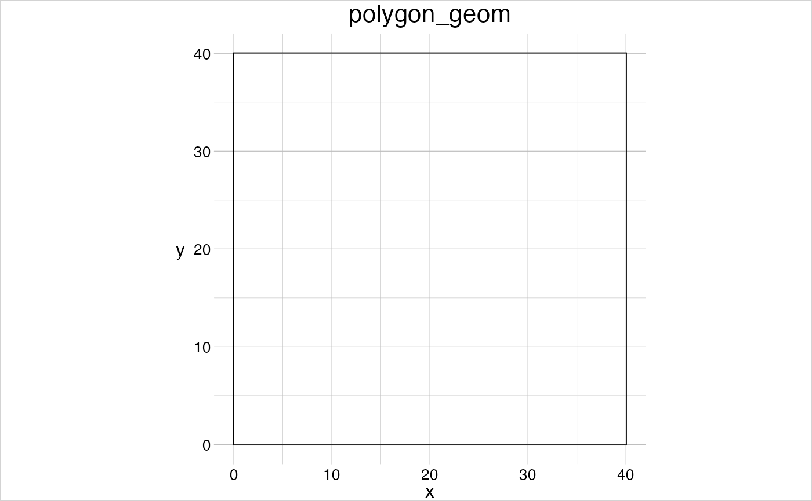
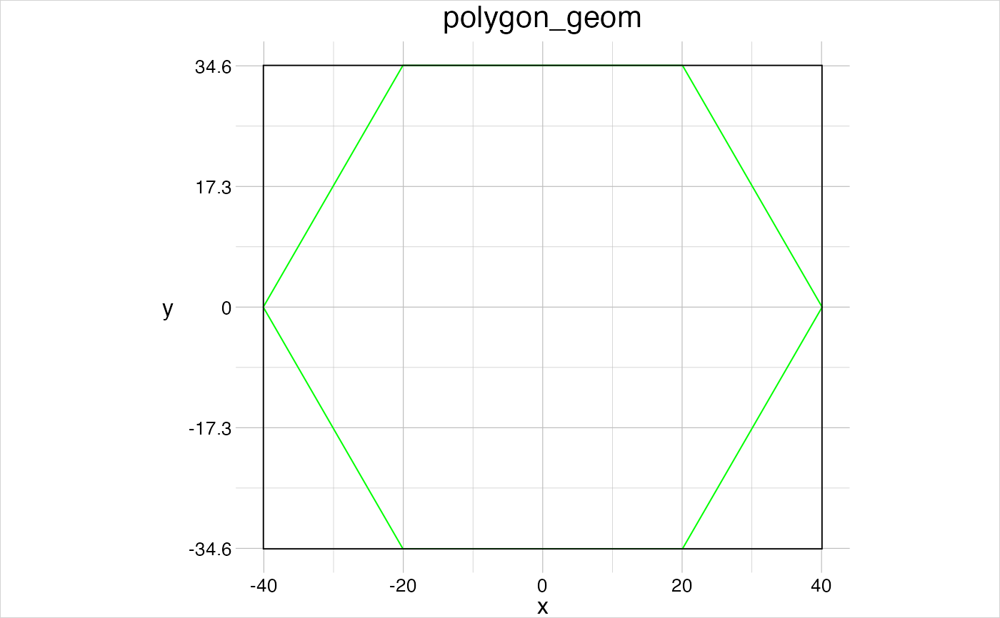
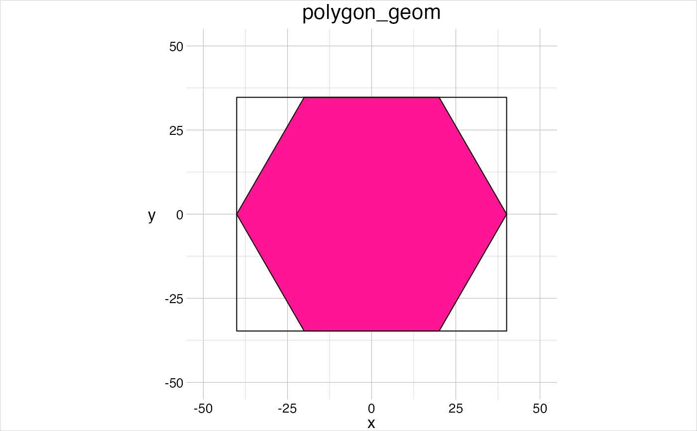

Create any (regular) polygon geometry (of class geom) either by
specifying anchor values or by sketching it.
gs_polygon( anchor = NULL, window = NULL, features = 1, vertices = 3, regular = FALSE, ... ) gs_triangle(anchor = NULL, window = NULL, features = 1, ...) gs_square(anchor = NULL, window = NULL, features = 1, ...) gs_rectangle(anchor = NULL, window = NULL, features = 1, ...) gs_hexagon(anchor = NULL, window = NULL, features = 1, ...)
| anchor | [ |
|---|---|
| window | [ |
| features | [ |
| vertices | [ |
| regular | [ |
| ... | [various] |
A geom.
The argument anchor indicates how the geom is created:
if anchor is set, the geom is created parametrically
from the points given in anchor,
if it is not set either
window or a default window between 0 and 1 is opened to sketch the
geom.
The argument regular determines how the vertices provided in
anchor or via template are transformed into a polygon:
if regular = FALSE the resulting polygon is created
from all vertices in anchor,
if regular = TRUE, only
the first two vertices are considered, as center and indicating the
distance to the (outer) radius.
gs_triangle: wrapper of gs_polygon where vertices = 3 and
regular = TRUE.
gs_square: wrapper of gs_polygon where vertices = 4 and
regular = TRUE.
gs_rectangle: wrapper of gs_polygon where vertices = 2,
regular = FALSE and the two complementing corners are derived from
the two given opposing corners.
gs_hexagon: wrapper of gs_polygon where vertices = 6 and
regular = TRUE.
# 1. create a polygon programmatically coords <- data.frame(x = c(0, 40, 40, 0), y = c(0, 0, 40, 40)) # if no window is set, the bounding box will be set as window aGeom <- gs_polygon(anchor = coords) visualise(aGeom)  # derive a regular polygon from the coordinates aPolygon <- gs_polygon(anchor = coords, vertices = 6, regular = TRUE) visualise(aPolygon, linecol = "green") visualise(aGeom, new = FALSE)  # the vertices are plottet relative to the window window <- data.frame(x = c(-50, 50), y = c(-50, 50)) aPolygon <- setWindow(x = aPolygon, to = window) visualise(aPolygon, fillcol = "deeppink") # using a geom as anchor retains its properties (such as the window) aRectangle <- gs_rectangle(anchor = aPolygon) visualise(aRectangle, new = FALSE)  # 2. sketch a hexagon if(dev.interactive()){ aHexagon <- gs_hexagon(features = 1) visualise(aHexagon, linecol = "deeppink", linetype = 2, new = FALSE) }